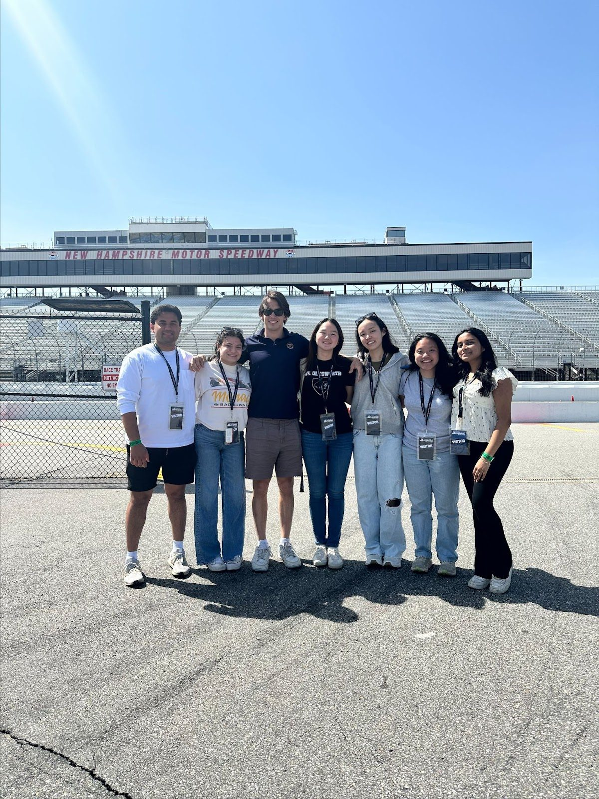
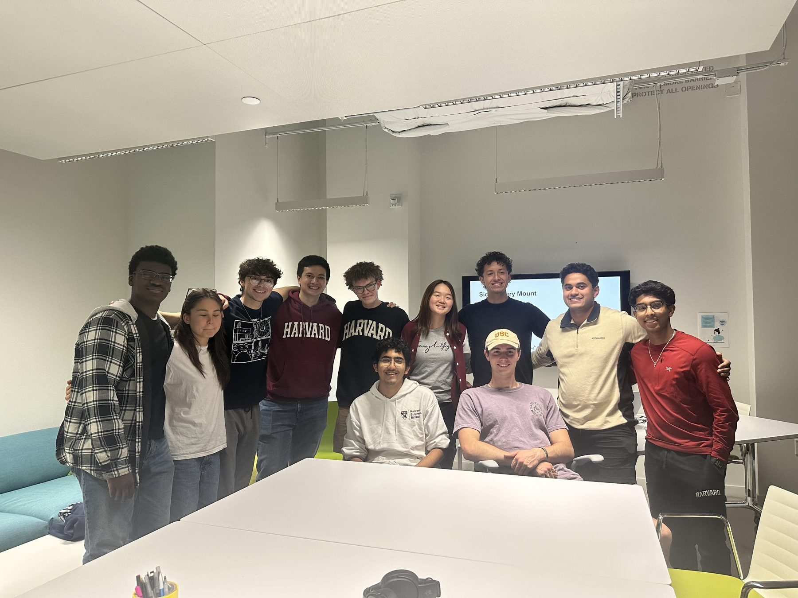
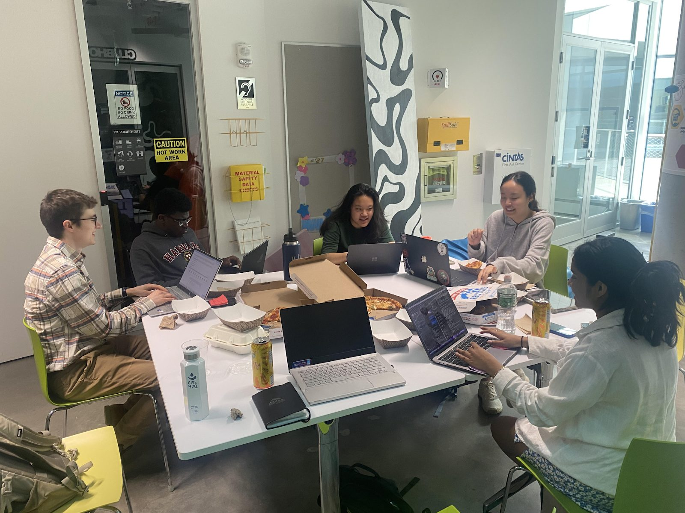
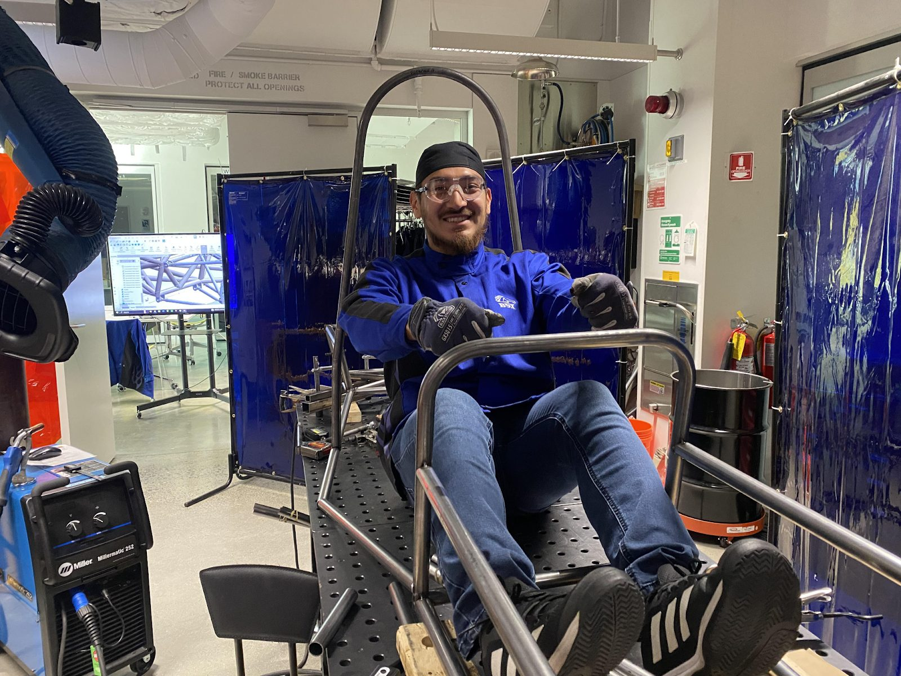
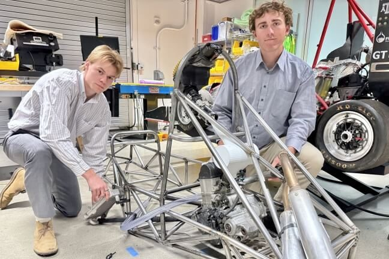
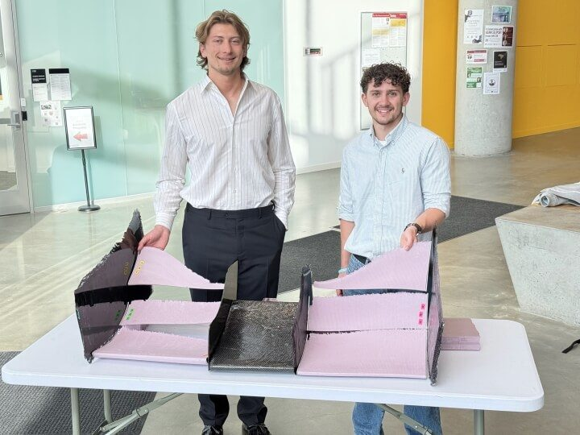

Why capstones
FSAE teams are hard to start because nobody wants to join a team with nothing built. A year-long senior capstone guarantees real progress, so we pointed several at one car: my rear suspension, Edwin Dominguez's chassis, Jack Meyer's steering, Peter Fischer and Josh Gordon's powertrain, and Oliver Murcko and Steffan Jones's aero, building on a front suspension from an earlier capstone.
Building the club
The seniors had little time outside their capstones, and the team needed underclassmen to continue. I recruited at the activities fair and through the engineering mailing list, ran an onboarding go-kart project so new members could own a subsystem, and set up business development and a sponsorship package. After winter break the club pivoted fully to the car, with members leading the pedal box and brakes, electrical, seat and safety, and manufacturing.
Handoff
I put funds into designing and fabricating our own parts instead of buying assemblies (and banned team merch until we had something that looked like a car). I ran elections for the 2025–26 board, led visits to MIT's FSAE team and the FSAE Electric competition, and stay on as an advisor. The Harvard SEAS article covers the story.











